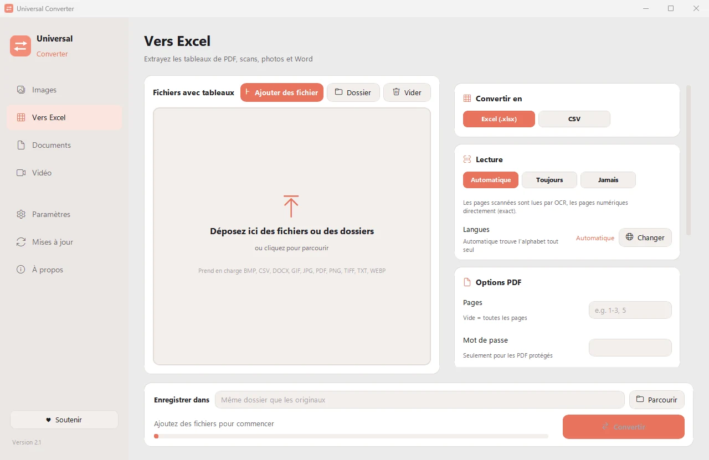

Extraire les tableaux de factures PDF vers Excel
Recopier les lignes de factures à la main est lent et source d'erreurs. Universal Converter trouve les tableaux de chaque facture, PDF, scan ou photo, et les place dans une feuille de calcul que vous pouvez trier, totaliser et importer.
Installer et mettre à jour
- Ouvrez le fichier .dmg téléchargé et faites glisser Universal Converter dans Applications.
- Ouvrez l'app. La première fois, macOS la bloque car elle n'est pas signée par Apple : cliquez sur Terminé.
- Ouvrez Réglages Système > Confidentialité et sécurité, faites défiler, cliquez sur « Ouvrir quand même » et saisissez votre mot de passe. Ce n'est à faire qu'une fois.
Mises à jour : si vous l'autorisez à la première ouverture, l'app recherche les nouvelles versions à chaque démarrage, vérifie leur signature numérique et les installe quand vous le choisissez.
Installer et mettre à jour
- Touchez « Télécharger pour Android » sur votre téléphone.
- Ouvrez le fichier téléchargé. Si Android le demande, autorisez votre navigateur ou gestionnaire de fichiers à installer des apps.
- Touchez Installer.
Mises à jour : l'app vérifie environ une fois par jour et vous prévient quand une nouvelle version est prête. Téléchargez-la de la même façon et installez-la par-dessus l'ancienne ; vos réglages sont conservés.
Comment faire
- Ouvrez Universal Converter et choisissez Vers Excel à gauche.
- Glissez vos fichiers ou un dossier entier dans la fenêtre, ou cliquez sur Ajouter des fichiers.
- Choisissez Excel (ou CSV). Ajoutez plusieurs factures à la fois pour les convertir en une seule fois.
- Cliquez sur Convertir. Les nouveaux fichiers sont enregistrés à côté des originaux, ou dans le dossier de votre choix.

Pourquoi hors ligne ?
Universal Converter travaille sur votre propre appareil. Vos fichiers restent privés, les gros fichiers ne posent pas de problème, et cela fonctionne sans connexion internet.
Autres choses qu'il sait faire
- Compresser une vidéo sans l'envoyer en ligne
- Convertir des vidéos entre MP4, MKV, WebM, MOV et AVI
- Enregistrer le son d'une vidéo en MP3
- Créer un GIF à partir d'une vidéo
- Extraire les tableaux d'un PDF vers Excel
- Réunir des photos en un seul PDF
- Convertir un PDF en Word
- Réunir plusieurs fichiers en un PDF
- Copier le texte d'une image (OCR)
- Convertir des images entre JPG, PNG, WEBP et plus
- Redimensionner des images ou les réduire à une taille de fichier
- Convertir un relevé bancaire PDF en Excel
- Transformer un document scanné en fichier Word modifiable
- Convertir les pages d'un PDF en images JPG
- Convertir des documents Word en PDF